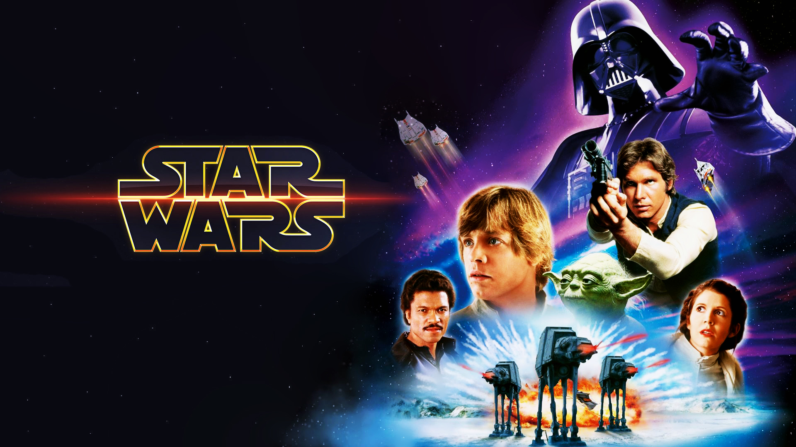

The prequel trilogy is the second installment of films of the Star Wars saga to be produced. They were released from 1999 to 2005. The prequel trilogy describes what had taken place 32 years up to 19 years before the events of Star Wars: Episode IV A New Hope. It primarily focuses on a young Darth Vader, then Jedi Anakin Skywalker, and an accompanying Obi-Wan Kenobi and the story of how they went from being friends to enemies and the tragedy of Anakin's descent into the dark side, as well as the origin of how the Galactic Republic became the Galactic Empire. It also features familiar faces such as C-3PO, R2-D2, Yoda, Chewbacca, and a younger Sheev Palpatine with the story of how he became the Emperor of the galaxy. It was the last trilogy to be distributed by 20th Century Fox until Lucasfilm was acquired by Disney in 2012.
Descriptions
The Phantom Menace (1999)
Obi-Wan Kenobi (Ewan McGregor) is a young apprentice Jedi knight under the tutelage of Qui-Gon Jinn (Liam Neeson) ; Anakin Skywalker (Jake Lloyd), who will later father Luke Skywalker and become known as Darth Vader, is just a 9-year-old boy. When the Trade Federation cuts off all routes to the planet Naboo, Qui-Gon and Obi-Wan are assigned to settle the matter.
The Clone Wars (2002)

Obi-Wan Kenobi (Ewan McGregor) is a young apprentice Jedi knight under the tutelage of Qui-Gon Jinn (Liam Neeson) ; Anakin Skywalker (Jake Lloyd), who will later father Luke Skywalker and become known as Darth Vader, is just a 9-year-old boy. When the Trade Federation cuts off all routes to the planet Naboo, Qui-Gon and Obi-Wan are assigned to settle the matter.
Revenge Of The Sith (2005)
It has been three years since the Clone Wars began. Jedi Master Obi-Wan Kenobi (Ewan McGregor) and Jedi Knight Anakin Skywalker (Hayden Christensen) rescue Chancellor Palpatine (Ian McDiarmid) from General Grievous, the commander of the droid armies, but Grievous escapes. Suspicions are raised within the Jedi Council concerning Chancellor Palpatine, with whom Anakin has formed a bond. Asked to spy on the chancellor, and full of bitterness toward the Jedi Council, Anakin embraces the Dark Side.
Ratings
Movie
Year
Rating
The Phantom Menace
1999
51
The Clone Wars
2002
65
Revenge Of The Sith
2005
79
Total Rating: 65
Although the ratings were not as good as the original trilogy, Revenge Of The Sith is one of the reasons why Star Wars is one of the best franchises. The clone Wars, in my opinion, is also a favorite of mine despite the ratings but the colosseum scene was one the best scenes.